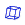
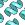

|
|
PrimeX Toolbar |
The PrimeX toolbar provides access to the main capabilities of PrimeX. To show or hide the PrimeX toolbar, do one of the following:
Choose Tasks → Advanced Tasks → Protein X-Ray Refinement → Display Toolbar
Choose View → Toolbars → Select Toolbars Displayed → PrimeX
| Input Data Opens the Input Data dialog box so you can read structure and X-ray data into the project. |
|
 |
Select a task button menu Displays a list of tasks to perform. These are the same as on the PrimeX submenu of the Applications menu. Each task opens a panel. |
| Quick Torsion Rotate part of a structure around a bond. Pick the bond in the Workspace, and drag with the left mouse button to adjust the torsional angle. |
|
| Partial Occupancy Opens the Partial Occupancy dialog box so you can set the occupancies for the selected atoms. |
|
| Regularize geometry for selected residues Perform a short, real-space coordinate minimization for the selected residues, using only the force field (no X-ray terms). |
|
| Perform interactive structure modification and minimization Select and move atoms, followed by a short force-field-only minimization of the nearby atoms. See the discussion of Protein Sculpting for more information. |
|
 |
Manage Surfaces Opens the Manage Surfaces panel. When you click and hold, a menu is displayed from which you can select a map type. |
| Create Map Opens the Create Map panel so you can create an electron density map. |
|
| Increase Isovalue Increase the isovalue for the displayed surface (this makes the surface smaller). Each click on the surface increases the isovalue by 0.1 sigma. Using control-click increases the isovalue by 1.0 sigma. |
|
| Decrease Isovalue Decrease the isovalue for the displayed surface (this makes the surface larger). Each click on the surface decreases the isovalue by 0.1 sigma. Using control-click decreases the isovalue by 1.0 sigma. |
|
| Increase Density Extent Increase the extent of the density map that is displayed. Each click on the button increases the cube dimensions by the amount that has been selected from the button menu. Click and hold on the button to open this menu. The default value is 1 Å. The available values range from 0.5 Å to 16 Å, and are synchronized with the values on the Decrease Density Extent button menu;. |
|
| Decrease Density Extent Decrease the extent of the density map that is displayed. Each click on the button decreases the cube dimensions by the amount that has been selected from the button menu. Click and hold on the button to open this menu. The default value is 1 Å. The available values range from 0.5 Å to 16 Å, and are synchronized with the values on the Increase Density Extent button menu. |
|
 |
Reference Sequence Opens the Reference Sequence dialog box so you can examine the reference sequence. |
| Protein Reports Opens the Protein Reports panel so you can view information about the protein structure. |
|
| Ramachandran Plot Opens the Ramachandran Plot panel so you can view a Ramachandran plot of the protein dihedrals. |
|
 |
Density Fit Opens the Density Fit panel. |
|  | View Unit Cell Displays the unit cell boundaries in the Workspace. |
|  | View Crystal Mates View part or all of the symmetry-related structure in the unit cell. If you click and hold, a menu is displayed, from which you can choose a distance from the displayed structure within which the crystal mates will be displayed. Performs the same action as Crystal Mates on the Workspace menu. |
|